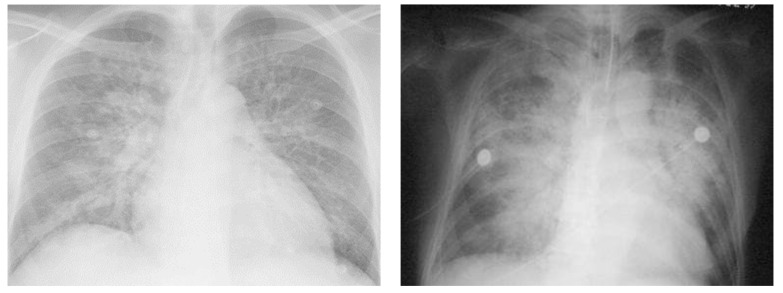
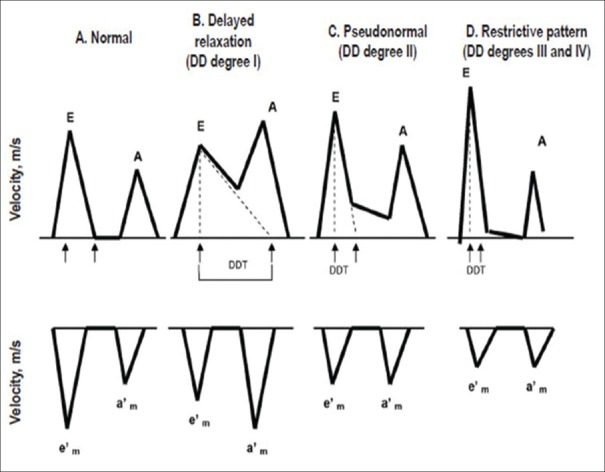
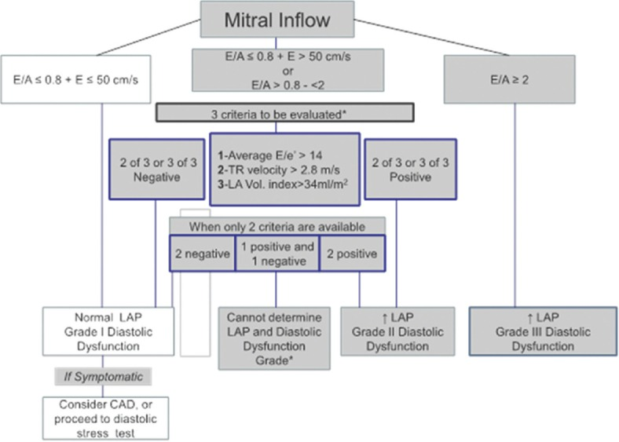

疾病 心臟
Heart failure ｜ 心臟衰竭 筆記更新 2026-07-27· 整理狀態：可用
加入閱讀清單 其他名稱 10 HF · CHF · 心衰竭 · 心臟衰竭 · Heart Failure · Congestive Heart Failure · HFrEF · HFpEF · High-output heart failure · 高輸出量心衰竭
一句話總覽
心臟結構或功能異常，使心輸出量不足、或必須靠升高填充壓 才能維持輸出。它是症候群不是單一疾病 ，診斷永遠要兩件事：症狀徵象 ＋ 客觀的心因性證據。分型用 left ventricular ejection fraction (LVEF) ，但 LVEF 不是嚴重度，是選藥的分類器 。
30 秒行動卡
診斷關鍵 ：症狀徵象 → natriuretic peptide （排除用，不是確診）→ echocardiography 量 LVEF（決定性）
治療骨架 ：HFrEF 四本柱盡快上齊；HFpEF 只有 SGLT2 inhibitor 站得住腳，其餘是利尿劑控症狀 ＋ 治共病
絕對不可 ：急性失代償且低灌流時新開或加量 beta-blocker ；由 ACEI 換 ARNI 未間隔 36 小時
定義與定位
臨床上要有症狀或徵象 ，同時要有客觀的心因性證據 （natriuretic peptide 升高，或影像顯示鬱血）。少了後面這一層，喘與水腫可以來自肺、腎、肝或甲狀腺。
依 LVEF 分型 — 決定用哪套藥
分型
LVEF
一句話
典型病因
HFrEF （reduced）≤40% 打不出去
心肌梗塞、dilated cardiomyopathy、心肌炎、長期心搏過速
HFmrEF （mildly reduced）41–49% 中間地帶；治療靠向 HFrEF
多由 HFrEF 改善或 HFpEF 惡化而來
HFpEF （preserved）≥50% 裝不進血
長期高血壓的老年人、肥胖／糖尿病、HCM 、Restrictive cardiomyopathy 、Aortic stenosis↗
HFimpEF （improved）基線 ≤40% 回升至 ＞40%
改善不等於治癒
藥要繼續吃 ，停藥會復發
HFpEF 不等於「EF 正常的喘」
三件事要同時成立：EF ≥50% ＋ 心衰竭症狀徵象 ＋ 客觀證據 （natriuretic peptide 升高，或超音波顯示舒張功能異常／充填壓上升）。輔助評分有 H₂FPEF 與 HFA-PEFF ，組成不外乎肥胖、高血壓、心房顫動、肺高壓、高齡、充填壓高。
Stage 與 NYHA 回答的是不同問題
Stage A–D ：疾病走到哪裡，只能前進不能後退 ——曾有症狀者即使症狀完全消失仍是 Stage C。它決定「該不該開始治療」。Stage B（pre-HF）最容易漏 ：有結構異常或生物標記升高、但從未有症狀，就該治療了。
NYHA I–IV ：此刻的功能狀態，可以來回 。它決定「現在藥要調到多重」。
病因與機制
flowchart TD
A["心肌損傷或壓力負荷"] --> B["心輸出量下降<br/>腎灌流減少"]
B --> C["RAAS 與交感活化"]
C --> D["鈉水滯留<br/>前負荷上升"]
C --> E["血管收縮<br/>後負荷上升"]
C --> F["心肌重塑與纖維化"]
D --> G["鬱血症狀"]
E --> F
F --> H["心功能再下降<br/>惡性循環"]
classDef key fill:#263238,stroke:#000,color:#fff,font-weight:bold
class H key
筆記中的流程與關係 這條線直接推出四本柱
短期救命的代償（縮血管、留鈉水、催交感），長期就是毒素。 所以有效的藥全是阻斷神經荷爾蒙 的：ARNI 打 renin-angiotensin-aldosterone system (RAAS) 並保留 natriuretic peptide、beta-blocker 打交感、MRA 打 aldosterone 與纖維化、SGLT2 inhibitor 打代謝與容積。
反過來說：只讓病人「感覺好」的藥（利尿劑、digoxin）不改善存活 ——症狀改善與存活改善是兩件事，這條線把四本柱與其他藥切開。
病因分類
類別
代表
缺血性
coronary artery disease 約佔 2/3 （見 CAD ），已開發國家第一病因
高血壓性
長期後負荷↑ → 向心性肥厚 → 舒張功能障礙 → HFpEF
浸潤性
amyloidosis、sarcoidosis、hemochromatosis
毒物／藥物
酒精、doxorubicin（劑量累積性）、trastuzumab、免疫檢查點抑制劑
感染／免疫
病毒性心肌炎、巨細胞心肌炎、Chagas disease
心律相關
長期心搏過速性心肌病、Atrial fibrillation 心室率未控制
高輸出型 甲狀腺毒症、嚴重Anemia 、動靜脈廔管（含Dialysis 用）、thiamine 缺乏、肝硬化、懷孕
心衰竭有家族聚集性 ——親代有心衰竭病史者，後代的左心室質量與內徑增加、收縮功能異常的機率較高。
危險因子
方向
內容
增加 年齡、高血壓、糖尿病、肥胖、吸菸、心肌梗塞病史、left bundle branch block (LBBB) 、無症狀左心室收縮功能障礙 、貧血 、慢性腎病、睡眠呼吸中止
降低 身體活動量高
兩個容易被翻面的字
束支阻斷是左 不是右——LBBB ＝ 心室收縮不同步 → 重塑 → 心衰竭，也因此只有 LBBB 是 cardiac resynchronization therapy (CRT) 的核心適應症 ；RBBB 沒有這一層意義。
血紅素是低 不是高——貧血既是危險因子，也是預後不良指標。
HFpEF 的危險標記 — 兩類就夠推
一句話推出整張清單
HFpEF 的核心是「心室裝不進血，而且沒有時間裝」。 任何因子丟進這句話檢驗：它讓心室更硬？還是讓舒張期更短？兩者皆非就不是。
所以心搏過緩方向剛好相反 ——心跳慢反而給了心室更多填充時間。心房顫動則是雙重打擊：快、不規則、又失去心房收縮貢獻的那段填充量（心室愈僵硬愈依賴它）。
但「靜息慢」與「運動時上不去」意義相反：chronotropic incompetence （運動時心率無法適度上升）是 HFpEF 運動不耐的公認機轉之一。
臨床表現
典型 ：勞動性呼吸困難（最常見）、端坐呼吸 orthopnea 、paroxysmal nocturnal dyspnea (PND) 、下肢對稱性凹陷性水腫、疲倦提示性 ：頸靜脈怒張 、S3 gallop （見 Cardiac auscultation ）、肝頸靜脈逆流、短期體重上升、肺底囉音少見但重要 ：Cheyne–Stokes 呼吸、腹水、意識改變與腎功能惡化（是低灌流的表現，不是「腎臟另有問題」 ）
床邊兩排 → 四象限
鬱血（wet）
低灌流（cold）
端坐呼吸、PND、下肢水腫、頸靜脈怒張、肝腫大與肝頸靜脈逆流、腹水、體重上升
疲倦、四肢冰冷、脈壓變窄 、意識改變、腎功能惡化、低血鈉
兩排交叉即 wet／dry × warm／cold ，直接對應處置：wet 就利尿、cold 就強心或減後負荷 。
敏感度與特異度分開記
端坐呼吸與 PND 特異度最高 （問「最有診斷價值的症狀」選它們）；疲倦與勞動性呼吸困難敏感度最高但特異度最低 （問「最常見的症狀」選它們）。
S3 gallop 在成人特異度極高；頸靜脈怒張 是最能反映右心充填壓的床邊指標。
誘因不是臨床表現
「藥忘了吃」「最近吃很鹹」「天氣熱喝很多水」是這一次急性失代償的誘因 ，不是心衰竭的表現，問診要分兩欄記。
常見誘因：藥物順從性差（最常見） 、新發心房顫動或快速心室率、感染、缺血（ACS ）、鹽水過量、腎功能惡化、Anemia 、肺栓塞，以及藥物誘發 （NSAID、thiazolidinedione、非 DHP-CCB、類固醇）。
→ 相關主訴流程：Dyspnea 、Edema 、Chest pain↗
診斷
步驟
內容
1. 臨床懷疑
症狀 ＋ 徵象 ＋ 危險因子
2. natriuretic peptide
排除用 （陰性預測值高），升高的原因太多，不能反過來確診
3. Echocardiography
決定性檢查 ：量 LVEF 分型、室壁厚度與腔室大小、舒張功能（E/e′、左心房容積指數、TR 速度）、瓣膜、右心、下腔靜脈
4. 找病因
缺血評估、Troponin 、鐵蛋白與 TSAT、TSH、腎功能與電解質
利鈉肽門檻 — 場景不同、數字不同
場景
BNP
NT-proBNP
門診／非急性，排除 ＜35 pg/mL
＜125 pg/mL
急診／急性，排除 ＜100 pg/mL
＜300 pg/mL
急診，支持診斷 ≳500 pg/mL
年齡分層，愈老切點愈高（＜50 歲 ＞450；50–75 ＞900；＞75 ＞1800）
偏高（偽陽性）
偏低（偽陰性）
高齡、女性、腎功能不全、心房顫動、肺栓塞、敗血症、貧血
肥胖（最重要） 、閃電型肺水腫極早期
ARNI 會把 BNP 與 NT-proBNP 拆成兩件事
sacubitril 抑制 neprilysin ，而 BNP 是 neprilysin 的受質、NT-proBNP 不是 。所以用 ARNI 的病人 BNP 會上升，不代表惡化 ；追蹤一律看 NT-proBNP 。
床邊另有較早的 Framingham criteria （2 主要，或 1 主要 ＋ 2 次要），主要項目就是上面那些高特異度的鬱血徵象。它早於 natriuretic peptide 與超音波，現在只當輔助。

左：急性心肌梗塞後的 cardiogenic pulmonary edema，可見中心性肺門周圍陰影、peribronchovascular cuffing 與 Kerley B lines；右：敗血症／ARDS 的 noncardiogenic edema，浸潤較斑片、周邊且可見 air bronchogram。真實病例會重疊，須合併心臟大小、肋膜積水、病史與超音波。Source: Mihailescu et al., Diagnostics 2023, Figure 3 （CC BY 4.0）。
鑑別診斷
要排除的
支持它的線索
怎麼分開
高輸出量心衰竭 四肢溫暖 、脈壓寬 、bounding pulse
見下表；找甲狀腺毒症、貧血、動靜脈廔管、thiamine 缺乏、肝硬化
Constrictive pericarditis 心包鈣化、心室交互依賴、Kussmaul sign
Echocardiography 呼吸變異 ＋ 心導管同步壓力曲線
Restrictive cardiomyopathy 壁厚但 ECG 電壓反而低 、雙心房擴大
影像 ＋ amyloidosis 檢查
COPD 急性惡化
長期吸菸、哮鳴為主、natriuretic peptide 不高
生物標記 ＋ 肺功能 ＋ 超音波
腎病症候群／肝硬化
水腫明顯但頸靜脈壓不高
頸靜脈評估 ＋ 尿蛋白 ＋ 肝功能
高輸出量 vs 一般（低輸出）HF
項目
一般（低輸出）HF
高輸出量 HF
心輸出量
下降
升高
全身血管阻力
上升 （代償性縮血管）下降
四肢與脈搏
冰冷、脈壓窄
溫暖、脈壓寬 、bounding pulse
核心問題
幫浦壞了
幫浦沒壞，是需求太大或分流太多
處置方向
神經荷爾蒙阻斷（GDMT）
治病因 ；強心藥無用
EF 正常 ≠ HFpEF
甲狀腺毒症早期的心衰竭 EF 正常甚至偏高，但它是高輸出量 ，機轉與 HFpEF 的「裝不進血」完全相反 。兩者都「EF 沒掉」，歸類卻不同格。反向陷阱：甲狀腺低下不是高輸出量心衰竭 ，它造成的是心搏過緩與低心輸出量。
另一條快速判斷：急性心肌損傷（心肌梗塞、猛爆性心肌炎）先傷收縮功能 ，走 HFrEF；慢性壓力負荷（長期高血壓、重度 Aortic stenosis↗ 、HCM ）才走向 HFpEF 。看到「急性期」，先把 HFpEF 刪掉。

Transmitral inflow 與 tissue Doppler 的進程：normal → impaired relaxation（E↓、A↑、e′↓）→ pseudonormal → restrictive（E/A 明顯升高、DT 縮短）。只看 E/A 會把 pseudonormal 誤判正常，因此一定要加 e′ 與其他填充壓指標。

舒張功能分級：先看 E/A，再用平均 E/e′ ＞14、TR velocity ＞2.8 m/s、LAVI ＞34 mL/m² 交叉驗證左房壓；三項中多數陽性支持 elevated LAP。兩圖 Source: Annals of Cardiac Anaesthesia review 2016, Figures 1 and 3
治療
HFrEF 的四本柱 — 四類藥各自降死亡率
效果可疊加，所以現行指引主張盡快同時上齊、再各自往上調 ，而不是舊版的「一種調到最大再加下一種」。
支柱
代表藥
起始重點
ARNI （angiotensin receptor–neprilysin inhibitor；不能用時改 ACEI／ARB）sacubitril/valsartan
由 ACEI 換過來必須停 36 小時
Beta-blocker carvedilol、metoprolol succinate 、bisoprolol
只有這幾種有實證 ；容量穩定時才起始，低劑量慢慢加
MRA （mineralocorticoid receptor antagonist）spironolactone、eplerenone
起始門檻 eGFR ≥30 且 K⁺ ＜5.0 ；起始與加量後追鉀
SGLT2 inhibitor （sodium-glucose cotransporter 2）dapagliflozin、empagliflozin
與有無糖尿病無關 ；腎功能較差仍可用
加在四本柱之上
適應情境
利尿劑（loop diuretic） 有鬱血就用——緩解症狀，不改善存活。不屬於四本柱
digoxin
症狀頑固或合併心房顫動控制心室率；降住院、不降死亡率。不屬於四本柱
ivabradine
竇性心律 ＋ 靜息心率仍偏快 ＋ LVEF ≤35%，且 beta-blocker 已到最大耐受劑量
靜脈鐵劑 缺鐵時改善症狀與運動耐受度；口服鐵劑在心衰竭無效
hydralazine ＋ 硝酸鹽
非裔且已用 GDMT，或無法耐受 RAAS 抑制劑者
台灣本土｜指引、仿單、健保給付是三套標準
健保給付最緊 ：SGLT2 inhibitor 原本只給付 LVEF ≤40%，2025/2 起擴大到 HFmrEF 與慢性腎病，HFpEF 仍不給付 。所以「四類藥同時上齊」是指引語言，實務上常被迫排在 ACEI/ARB ＋ beta-blocker 之後。
ivabradine 的門檻：指引與美國仿單是靜息心率 ≥70 ，歐盟與台灣仿單是 ≥75 。
裝置治療（僅 HFrEF 適用）
裝置
門檻
ICD LVEF ≤35% ＋ NYHA II–III ＋ 最佳 guideline-directed medical therapy (GDMT) ≥3 個月
CRT （最強適應症）LVEF ≤35% ＋ 竇性心律 ＋ LBBB ＋ QRS ≥150 ms ＋ 已用 GDMT
心肌梗塞後 40 天內不放 ICD
急性期的 EF 可能自行回升，太早植入無存活效益；血運重建後也要等（一般 90 天）再重新評估 EF。
CRT 則是「條件愈齊全效果愈好」：非 LBBB，或 QRS 只有 120–149 ms，建議等級都會往下掉一級。
HFpEF／HFmrEF — 藥效與 HFrEF 大相逕庭
藥物類別
HFrEF
HFpEF
ARNI／ACEI／ARB
✔ 降死亡率
✘ 無明確效益
Beta blocker↗ ✔ 降死亡率
✘ 無明確效益
MRA
✔ 降死亡率
△ 主要是降低住院
SGLT2 inhibitor ✔ 降死亡率
✔ 降低複合終點 ——效益主要來自住院 ，單獨的心血管死亡未達顯著
利尿劑
控症狀，不改善存活
同左
糖尿病用藥的心衰竭立場
增加 心衰竭住院：thiazolidinedione （pioglitazone、rosiglitazone）、saxagliptin 與 alogliptin （DPP-4 抑制劑中的兩個例外）。
中性 ：metformin、其餘 DPP-4 抑制劑、GLP-1 受體促效劑、胰島素。
降低 ：SGLT2 inhibitor ——已是 HFrEF 與 HFpEF 兩者的正式治療。
急性失代償的處置（依四象限）
象限
處置
Wet ＋ Warm （最常見）靜脈 loop diuretic ；血壓夠時加血管擴張劑；缺氧或肺水腫用 NIV
Wet ＋ Cold 血壓尚可 → 血管擴張劑 ＋ 利尿劑；低血壓 → 正性肌力藥 （dobutamine、milrinone）後再利尿
Dry ＋ Cold 先謹慎補液 ；仍低灌流才用正性肌力藥
Dry ＋ Warm 已代償——調整口服 GDMT ，別再加利尿劑
同時：找誘因並處理 、限鹽限水、量每日體重與輸出入量。
併發症與預後
面向
不良預後指標
功能
NYHA III–IV ；peak VO₂ 偏低 → 應轉介心臟移植評估
血行動力
低收縮壓、靜息心搏過速、脈壓窄
生化
低血鈉 、腎功能惡化、natriuretic peptide 持續偏高 、Troponin 持續可測到
心電圖／結構
QRS 增寬 、心房顫動、LVEF 愈低、右心室功能不良、肺高壓
兩個反直覺的預後點
低血鈉在心衰竭是壞事 ——它反映神經荷爾蒙活化與稀釋性水滯留的嚴重度，不是「鹽吃太少」。
體重下降有兩種意義 ：利尿後短期下降是好事；非刻意的長期體重下降（cardiac cachexia）是預後不良指標。
禁忌與陷阱
絕對不可
情境
絕對不可
為什麼
該做什麼
急性失代償、明顯鬱血或低灌流
新開或加量 beta-blocker 負性肌力與負性頻率會讓失代償惡化
先穩定血行動力；原本已在吃的通常減量續用，不貿然全停
已在用 ACEI，要換 ARNI
間隔不足 36 小時 同時抑制 ACE 與 neprilysin → 緩激肽堆積 → 血管性水腫
停 ACEI 滿 36 小時再開；曾發生血管性水腫者永不使用 ARNI
HFrEF
非 DHP-CCB（verapamil、diltiazem） 負性肌力，增加惡化與住院
控心室率用 beta-blocker；降壓改用 RAAS 抑制劑或 amlodipine
任何心衰竭
NSAID／COX-2 抑制劑 鈉水滯留、腎灌流下降、拮抗利尿劑與 RAAS 抑制劑
止痛改用 acetaminophen
心衰竭合併糖尿病
thiazolidinedione 明確增加心衰竭住院
改用 SGLT2 inhibitor
已用 RAAS 抑制劑
併用 MRA ＋ 補鉀劑 而不追鉀
三重打擊 → 致死性高血鉀
起始與加量後 1–2 週追 K⁺ 與腎功能；K⁺ ≥5.5 先停 MRA
結構性心臟病的心律不整
Class Ic 抗心律不整藥（flecainide、propafenone） 促心律不整、增加死亡率
用 amiodarone，或走裝置／電燒
妊娠或計畫懷孕
ACEI／ARB／ARNI／MRA 胎兒毒性
換 hydralazine ＋ 硝酸鹽，轉介高危妊娠
常見錯誤
把利尿劑或 digoxin 算進四本柱 ——它們改善症狀但不降死亡率。把 LVEF 當嚴重度 ——它只是選藥的分類器。EF 30% 的人可能能爬山，EF 55% 的 HFpEF 可能走十公尺就喘。看到 EF 正常又喘就叫 HFpEF ——還要有客觀證據，而且要先排除高輸出量心衰竭 。把甲狀腺亢進早期的心衰竭歸到 HFpEF ——那是高輸出量，機轉完全相反。beta-blocker 隨便換一種 ——只有 carvedilol、metoprolol succinate 、bisoprolol 有實證；metoprolol tartrate 不是那一顆。HFimpEF 停藥 ——EF 回升是藥物有效，不是病好了。用 ARNI 後看到 BNP 上升就以為惡化 ——要看 NT-proBNP。看到肥胖病人 natriuretic peptide 不高就排除心衰竭 ——肥胖是最常見的偽陰性來源。把 RBBB 當危險因子 ——是 LBBB ，也只有 LBBB 是 CRT 的核心適應症。把心搏過緩當 HFpEF 危險標記 ——是心搏過速與心房顫動 。
相關連結